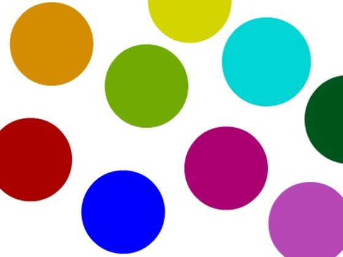

Counting the Colors of Candy
Due March 1st by 5pm - Partners OK, turn in one submission per team, make sure both names are in the comments.
Teams/Partners can only be teams of two, NEVER MORE, working alone is OK, but max amount of team members will be two.
TO DO:
You are to write a OPENCV program with Python that takes still images of candy (M&M, Skittles, Reeses Pieces) and counts the total number of candy, plus will give the count of each color of candy.
Requirements:
- Taking in an image of candy (I'll give the images to use) you will use OpenCV to segment out the candy.
- You will then take the segmented candies and decipher which color each piece of candy is.
- You will then output in the corner of the image how many of each color candy you have.
- Example:
- Green = 5
- Yellow = 3
- Red = 4
- Advanced you will read in a video of candy's on a moving manufacturing belt and keep track of the count as they enter and exited the screen.
- Your code should not have to adjust code to solve the problem on different levels of images.
- You will get easy, medium, harder pictures and then a video
- Get easy picture working first.
- Then adjust to get medium picture working, when you do it shouldn't break the easy picture.
- We will test with easy first, if it doesn't work we will not go on to the medium picture.
- First must work, then medium, then hard, then video in that order without changing code to get them all.
Images:
Images to come shortly. But you can use this one for now, or the other really easy one to start:

To Turn in:
Turn in the source code to D2L by 5 pm, March 1st. One submission per team (if a team) both names in comments.